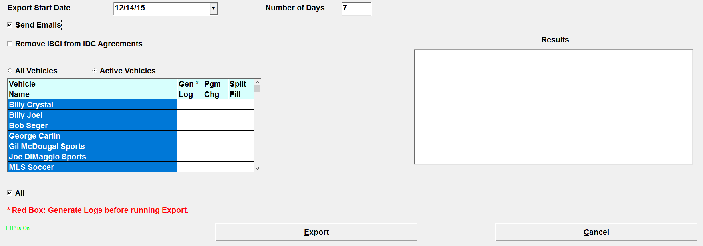
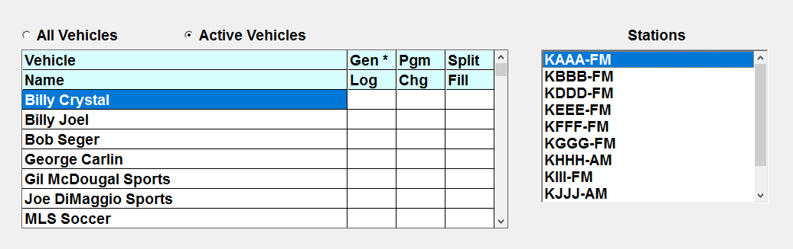
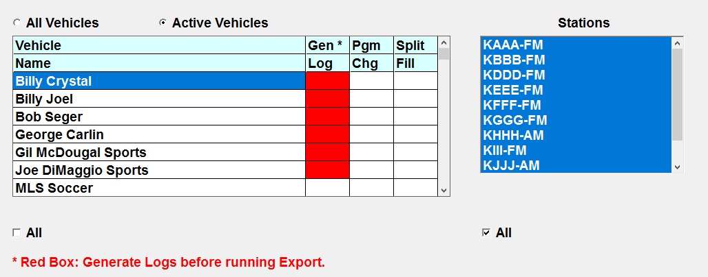
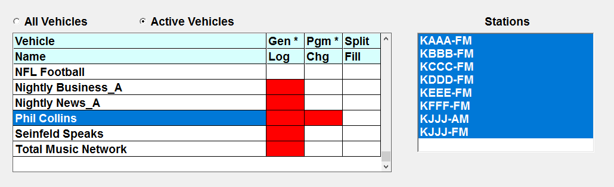
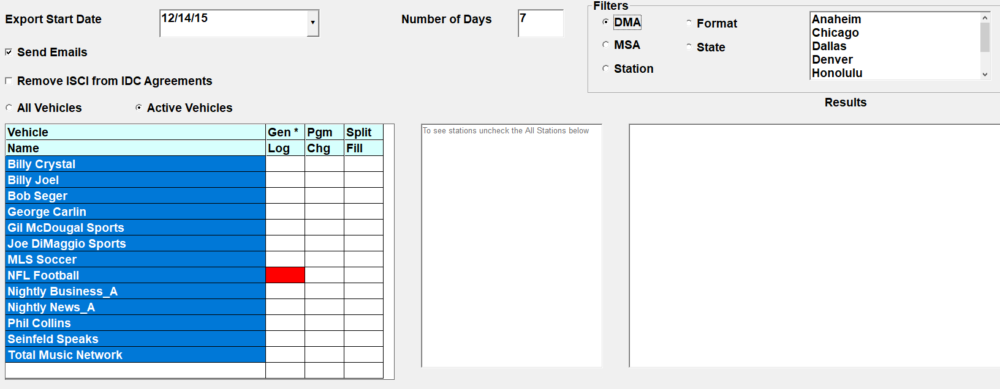
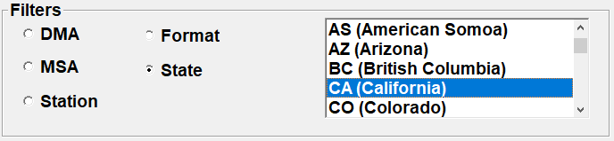

Counterpoint Affidavit Export
The Counterpoint Affidavit Export us used to export affiliate spot data to the Counterpoint Affidavit website.

The following fields are available for selection on the Export screen:
- Export Start Date: Enter the start date of the export
- Number of Days: Enter the number of days to be exported (typically 7)
- Send Emails: Leaving “Send Emails” checked will email alerts to your affiliates when a new or revised log is exported
- Remove ISCI from IDC Agreements: You can choose to include or exclude ISCI codes from IDC Agreements
- All Vehicles or Active Vehicles: Select the vehicles for the export from all of the vehicles or only active vehicles
- Select vehicles from the vehicle list.
If the export is run for a single vehicle, then it’s possible to select which stations to export to from the list of stations that appears, as shown in the example below in which the vehicle Billy Crystal is selected and the station KAAA-FM is selected from the list of stations.

If the export is run for multiple vehicles, then no station selectivity is available.
Before running the export, check the Gen Log, Pgm Chg, and Split Fill fields. These fields are used to indicate whether the log has been generated, whether there is a programming alert, and whether there are missing split fills.
Gen Log: is used to indicate whether the final log has been generated or not for the vehicle, using the Export start date and number of days to determine the date period. If the log has been generated, the background color of the field will be white. If the log has not been generated, the background color of the field will be red. If the Gen Log field is red, then the log should be generated before exporting that vehicle/date. The cell will also turn red if the final log has been generated, but spots have been changed (or copy was changed) and the log was not reprinted. In this case, reprint the log to clear the red background color from the Gen Log field.
In the example below, the Gen Log field is red for some of the vehicles because the final log has not been generated for the entered date range. Run the final or reprint log as needed to clear the red alert before running the export.

Pgm Chg: this field turns red when there is a programming change alert for the vehicle/date. The programming change alert appears when programming has been changed for a vehicle on the Programming screen. After programming has been changed, typically agreements will need to be updated. After agreements have been updated, the alert can be cleared by pressing the Alert button (on the Affiliate system), selecting the "Agreement alert" radio button, then selecting the row with the alert and pressing the Clear button to clear it. Once the alert has been cleared, the “Pgm Chg” field on the web export screen will no longer be red.
In the example below, the vehicle “Phil Collins” has a red cell in the “Pgm Chg” field. When this is the case, before running the export for that vehicle, update agreements if needed to reflect the new programming, then clear the programming alert from the Alerts screen. Once the alert has been cleared, the “Pgm Chg” field will turn white.

Split Fill: if Split Networks are enabled in Traffic Site Options, the Split Fill column will be shown. This will turn red if the log has been generated for the vehicle, and there are split network spots in the date period that the log is being generated for, and there is no matching split fill definition for that vehicle/date span on the Split Fill screen (accessed on the Logs screen). If the field is red, enter split fills on the Split Fill screen to change the cell to white.
Once all the parameters have been selected and there are no red warning alerts in the Gen Log, Pgm Chg, and Split Fill fields, press the Export button to run the export.
The Results area will show information about the task as it runs. When it finishes running, the Results text will turn green.
A record of the export is saved to the Web Export Log, which can be viewed through the Accessories -> Messages Viewer. The file is stored in the CSI\Prod\Export folder, and named WebSpots_SARA-PC_SaraSmith_140103_112345 (Filename_computer name_user name_yymmdd_hhmmss).
Station Filter
On version 7.1 and above, station filters are available on the export screen and can be used to filter the station list. The following filters are available: DMA, Format, MSA, State, and Station.

When selecting the DMA, Format, MSA, or State filter, the box to the right shows the available DMAs, Formats, MSAs, or States. (Note: the Station’s Mailing Address State is the state that is used.)

Select one or more choices from the selection box to filter the list of stations by the selected criteria. By default, the Station filter is selected. When the Station filter is selected, the list box on the right has no effect. (Use the regular Station list box to select or de-select stations when using the Station filter.)
On version 7.1 and above, by default, the station list does not show any stations and instead shows the text “To see stations, uncheck All Stations below”. When the “all stations” checkbox is checked on, the list of stations is simply not shown, but it either includes all stations, or if the station list is filtered, those stations that meet the filter criteria (and that apply to the selected vehicles). To see the stations in the station list, uncheck the “all stations” checkbox.
If the station list is filtered using one of the available filters, then only those stations will be exported. For example, if Vehicle A is selected, and the New York DMA filter is used to filter the station list for Vehicle A, when exporting, only the stations defined with the New York DMA and that are affiliated with Vehicle A for the selected date span will be exported.